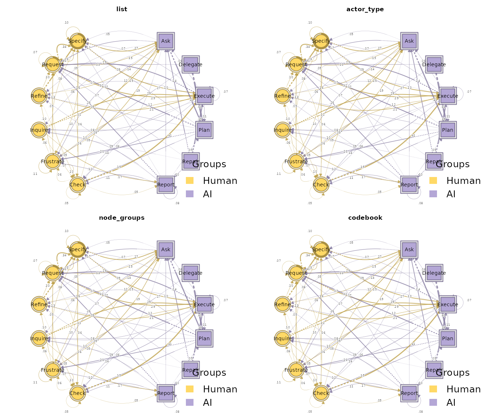
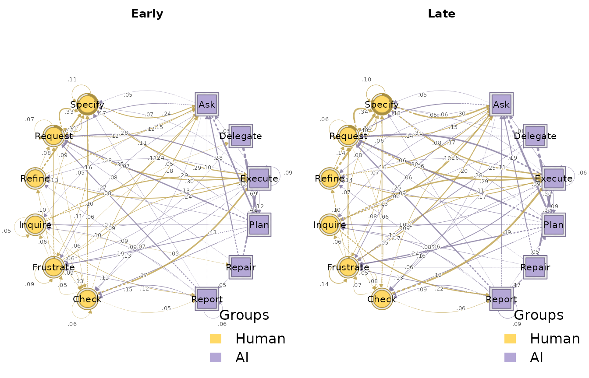

Input formats
Written by Mohammed Saqr and Sonsoles López-Pernas
Source:vignettes/articles/input-formats.Rmd
input-formats.RmdA heterogeneous transition network needs two pieces of information that ordinary event logs store in different ways: the order of the coded events within each session, and the actor type that owns each code. Some studies keep one table per actor, because the two streams were coded separately (the messages of a learner and the replies of a chatbot, for example); others keep one table of all events with a column naming the actor; and others keep the events in one table and the coding scheme, which assigns every code to an actor, in a codebook. The analysis should not depend on which of these layouts the data happen to arrive in.
build_htna() accepts all three layouts and resolves them
to the same interleaved sequence per session, so the resulting networks
are identical. This guide shows each layout on the bundled data,
verifies that they give the same network, and then covers two arguments
that work with any layout: disambiguate, for a code label
used by more than one actor, and group, for one network per
cohort of sessions. Fitted clustering results are a fourth kind of
input, covered in Clustering inputs.
Data
The package ships the same vibe-coding sessions (429 sessions of human-AI pair programming) in the three layouts.
-
human_simplified,ai_simplified: one long table per actor; each row is one coded event of that actor. -
human_ai: both tables stacked, with the actor inactor_type("Human"or"AI") and a session-level cohort tagphase("Early","Late"). -
human_ai_codebook: the coding scheme, one row per code, with columnscodeandactor_type.
All tables share the columns build_htna() reads by
default:
-
Session:
session_id(argumentsession). -
Code:
code(argumentaction). -
Order:
order_in_session(argumentorder), a time index shared by both actors within a session, so the two streams interleave in the order in which the events happened.
data(human_ai, human_simplified, ai_simplified, human_ai_codebook)
human_ai_codebook
#> code actor_type
#> 1 Specify Human
#> 2 Request Human
#> 3 Frustrate Human
#> 4 Check Human
#> 5 Inquire Human
#> 6 Refine Human
#> 7 Delegate AI
#> 8 Plan AI
#> 9 Execute AI
#> 10 Ask AI
#> 11 Repair AI
#> 12 Report AIThe codebook assigns six codes to each actor: the human specifies, requests, checks, inquires, refines and expresses frustration; the AI delegates, plans, executes, asks, repairs and reports.
One table per actor
When each actor’s events are in a separate table, the tables are passed as a named list. The names become the actor types, in the order given.
net_list <- build_htna(list(Human = human_simplified, AI = ai_simplified))
summary(net_list)
#> <htna network>
#> Method: relative
#> Sessions: 429 (max 287 timesteps)
#> Nodes: 12
#> Edges: 135 / 144 (non-zero)
#>
#> Actor types (2):
#> Human (6 nodes): Check, Frustrate, Inquire, Refine, Request, Specify
#> AI (6 nodes): Ask, Delegate, Execute, Plan, Repair, Report
#>
#> Edge counts by actor (rows = source, cols = target):
#> Human AI
#> Human 35 36
#> AI 36 28
#>
#> Network metrics:
#> metric value
#> Node Count 12.0000
#> Edge Count 135.0000
#> Network Density 1.0000
#> Mean Distance 0.0274
#> Mean Out-Strength 1.0000
#> SD Out-Strength 0.0000
#> Mean In-Strength 1.0000
#> SD In-Strength 0.6309
#> Mean Out-Degree 11.2500
#> SD Out-Degree 0.9653
#> Centralization (Out-Degree) 0.0579
#> Centralization (In-Degree) 0.0579
#> Reciprocity 0.9600The network has 12 nodes, six per actor, built from 429 sessions. Of the 144 possible directed edges 135 are non-zero, and the edge counts by actor show that transitions occur in every block: 35 within the human codes, 36 from human to AI, 36 from AI to human and 28 within the AI codes.
One table with an actor column
When all events are in one table, the column that names the actor of
each row is passed as actor_type. The actor order follows
the levels of that column if it is a factor, and the order of first
appearance otherwise.
net_actor_type <- build_htna(human_ai, actor_type = "actor_type")One table and a codebook
When the event table has no actor column, the assignment of codes to
actors is declared with node_groups, either as a named list
of codes or as a two-column codebook whose code column is named like
action (here code).
net_codes <- build_htna(
human_ai,
node_groups = list(
Human = c("Specify", "Request", "Frustrate", "Check", "Inquire", "Refine"),
AI = c("Delegate", "Plan", "Execute", "Ask", "Repair", "Report")
)
)
net_codebook <- build_htna(human_ai, node_groups = human_ai_codebook)A code in the data that is missing from node_groups, or
listed under two actors, raises an error, so the declared scheme is
checked against the data.
Do the layouts give the same network?
The edge table of a network (as.data.frame()) lists
every non-zero transition with its weight and the actors of its two
codes. If the four networks agree, their edge tables are equal.
edges_list <- as.data.frame(net_list)
all.equal(edges_list, as.data.frame(net_actor_type))
#> [1] TRUE
all.equal(edges_list, as.data.frame(net_codes))
#> [1] TRUE
all.equal(edges_list, as.data.frame(net_codebook))
#> [1] TRUEAll three comparisons return TRUE: the 135 edges, their
weights and their actor assignments are the same whichever layout the
data came in. The choice of layout is therefore a matter of how the data
are stored, not of the analysis. A named list of networks is drawn one
network per element:
op <- par(mfrow = c(2, 2), mar = c(1, 1, 3, 1))
plot_htna(list(list = net_list, actor_type = net_actor_type,
node_groups = net_codes, codebook = net_codebook))
par(op)The four panels are indistinguishable, as the edge tables predicted.
What if two actors use the same code label?
Some coding schemes give the same label to a move of either actor,
for example Ask for a question from the human and a
clarification request from the AI. Such codes are different behaviours,
and merging them into one node would mix the two actors.
build_htna() therefore stops when a label occurs under more
than one actor. The small table below has Ask and
Reply for both actors in each of three sessions.
overlap <- data.frame(
session_id = rep(c("s1", "s2", "s3"), each = 6),
code = rep(c("Ask", "Reply", "Ask", "Reply", "Ask", "Reply"), 3),
actor_type = rep(c("Human", "Human", "AI", "AI", "Human", "AI"), 3),
order_in_session = rep(seq_len(6), 3)
)Building the network as usual raises an error of class
htna_actor_conflict that names the shared labels.
build_htna(overlap, actor_type = "actor_type")
#> Error:
#> ! Code(s) appear in more than one actor group: Ask, Reply. Pass `disambiguate = TRUE` to prefix codes with the actor label.With disambiguate = TRUE every code is prefixed with its
actor, so the two Ask codes become the separate nodes
Human:Ask and AI:Ask.
net_dis <- build_htna(overlap, actor_type = "actor_type",
disambiguate = TRUE)
as.data.frame(net_dis, what = "nodes")
#> node actor
#> 1 AI:Ask AI
#> 2 AI:Reply AI
#> 3 Human:Ask Human
#> 4 Human:Reply HumanThe network has four nodes, two per actor, and each keeps its actor type.
How is one network built per cohort?
Any layout can be split into one network per cohort of sessions with
group, which names a session-level column.
human_ai has the column phase, which places
the first 214 sessions in chronological order in Early and
the remaining 215 in Late. The result is a grouped network
(an htna_group) whose cohorts follow the factor levels of
phase.
grp <- build_htna(human_ai, actor_type = "actor_type", group = "phase")
as.data.frame(summary(grp), what = "actor_pairs")
#> group source_actor target_actor n_edges
#> 1 Early Human Human 35
#> 2 Early Human AI 36
#> 3 Early AI Human 36
#> 4 Early AI AI 28
#> 5 Late Human Human 35
#> 6 Late Human AI 36
#> 7 Late AI Human 36
#> 8 Late AI AI 27Both cohorts have the same actor partition; the early network has 28
non-zero AI-to-AI edges and the late network 27, and the other blocks
have the same counts in both. A grouped network is passed as it is to
the other functions (plot_htna(),
bootstrap_htna(), permutation_htna(),
compare_htna() and the rest), which work through its
cohorts. The Grouped heterogeneous transition
networks vignette and the Comparing networks guide continue
from here.

par(op)Which layout to use
| Data at hand | Call |
|---|---|
| One table per actor | build_htna(list(Human = h, AI = a)) |
| One table with an actor column | build_htna(d, actor_type = "actor_type") |
| One table and a codebook | build_htna(d, node_groups = codebook) |
| One table and code lists | build_htna(d, node_groups = list(Human = ..., AI = ...)) |
| A fitted clustering of sessions |
build_htna(fit); see Clustering inputs
|
| A label shared by two actors | add disambiguate = TRUE
|
| One network per cohort | add group = "phase"
|